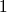
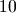

2.1.6. Float upsampling factor:¶
Omitting the potential artifacts discussed in previous chapters, the process of upsampling a signal by a factor is rather simple. All it takes is adding the right number of zeros to the signal spectrum.
This being said, the right number of zeros might be hard to find (if at all) when .
Assuming the input signal size is , and the user zooming factor is , then
the padding spectrum size must be  .
.
Chances are so the input signal has to be padded up to a size assuming such a exists.
If it does, then it is easy to figure out how this padding could imply overhead.
If it does not, and the spectrum is padded up to a size such that then the zooming factor actually applied is .
To make sure Sirius always applies the user required zooming factor, and not an approximation of it, Sirius requires the user to set the input spacing, and the output one. Say the required zooming factor is then the user must set input spacing to and output spacing to (no matter the unit here).
Sirius will then understand the zooming factor is and so will upsample the input data by a factor before decimating the output to keep only  pixel out of .
This process ensures the zooming factor is exactly the one required by the user. It shall be noted the decimation is a safe process here and no aliasing will come from it. Indeed, the input spacing is (again, no matter the unit), so decimating from  to remains an aliasing free process since zooming from to dit not add higher frequencies than the ones already contained in the original spectrum.
Note
If one has given Sirius a low-pass filter to control the way high frequencies are cut-off, Sirius assumes this filter is sampled at the targeted resolution ( here). Because the zooming factor will actually by , Sirius will firstly upsample the filter by a factor . This upsampling is obviously done using Fourier zero padding. This is equivalent to a sinc convolution which shall be the perfect way to upsample a continuous and rather smooth filter.